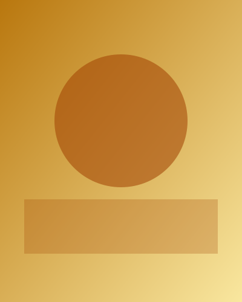

Née à Lyon, Camille Laurent peint depuis plus de quinze ans. Son travail explore la lumière, les paysages intérieurs et la mémoire des lieux, à travers de larges aplats de couleur et des textures superposées.
Formée aux Beaux-Arts, elle expose régulièrement en France et en Europe. Chaque toile est une pièce unique, réalisée à la main dans son atelier.

Pour acquérir une œuvre, une commande ou une exposition :
contact@exemple.com